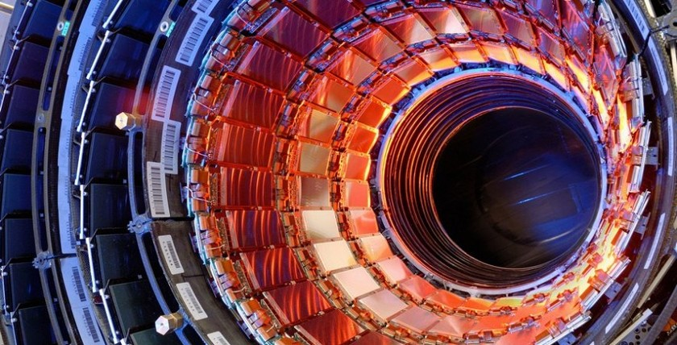

Большой адронный коллайдер
👩🔧 👨🔧 Нам всем конец, или как?
Collide - по-английски значит "сталкивать". Соответственно коллайдер - это столкновитель, устройство которое разгоняет и сталкивает протоны. Результат столкновения исследуется учёными.
Адроны - это класс элементарных частиц, способных участвовать в сильных взаимодействиях. Чтоб не заморачиваться несчёт терминов - это просто-напросто протоны и нейтроны. А также соответствующие античастицы. Поэтому в адронном коллайдере разгоняться будут именно протоны (нейтроны фиг разгонишь - у них нет электрического заряда) .
 Непонятная картинка для привлечения вниманияВ конце 1970-х годов физикам удалось разработать Стандартную модель (СМ), которая объединяет три из четырёх фундаментальных взаимодействий — сильное, слабое и электромагнитное. Гравитационное взаимодействие по-прежнему описывают в терминах ОТО. Таким образом, в настоящее время фундаментальные взаимодействия описываются двумя общепринятыми теориями: ОТО и СМ. Их объединения пока достичь не удалось из-за трудностей создания теории квантовой гравитации.
БАК позволит провести эксперименты, которые ранее были невозможны и, вероятно, подтвердит или опровергнет часть этих теорий. Так, существует целый спектр физических теорий с размерностями больше четырёх, которые предполагают существование «суперсимметрии» — например, теория струн, которую иногда называют теорией суперструн именно из-за того, что без суперсимметрии она утрачивает физический смысл. Подтверждение существования суперсимметрии, таким образом, будет косвенным подтверждением истинности этих теорий.